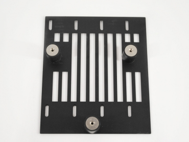
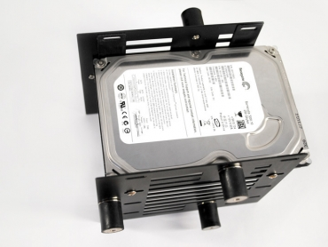
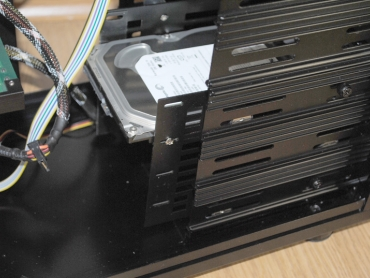
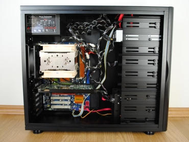
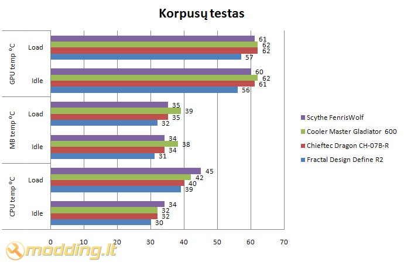

Scythe FenrisWolf korpuso apžvalga
Kompanija Scythe mums jau pažįstama - apžvelgėme kelis jų gamybos aušintuvus, tokius kaip Scythe Orochi, Scythe NINJA Mini bei keletą kitų. Produkcijos kokybė ir efektyvumas nenuvylė. Kompanija Scythe specializuojasi PC aušinimo komponentų gamyboje, tačiau jos siūlomos produkcijos sąraše jau yra vienas korpusas - Scythe FenrisWolf. Apžvelkime FenrisWolf korpusą ir sužinosime, ar kompanijai pavyko išlaikyti gaminių kokybės kartelę.
Žvilgsnis iš arčiau
Ant Scythe FenrisWolf korpuso pakuotės pavaizduotas vilkas, tačiau kaip matome pats korpusas neturi jokios vilko atributikos. Galinėje pakuotės dalyje nurodyti korpuso ypatumai, šešiomis užsienio kalbomis pateiktos korpuso charakteristikos. Šoninėje pakuotės dalyje matome Benjamin Franz logotipą - tai vokietis moderis, kuris prisidėjo kuriant šį korpusą.

Scythe FenrisWolf korpusas pagamintas iš aliuminio, todėl sveria vos 6,0 kg. Korpuso priekyje yra varstomo durelės, kurios užfiksuojamos naudojant magnetus. Jos pagamintos iš aliumininio rėmo, kuris yra beveik matinis. Rėmo viduryje yra grotelės, pro kurias traukiamas oras į korpuso vidų. Ant grotelių, viršuje, išdėstytas Scythe logotipas.
Kairiame korpuso šone matome b raidę - tai Benjamin Franz aka benny simbolis. Korpusas nudažytas juoda spalva, korpuso kojelės taipogi juodos. Galinėje korpuso sienelėje visi naudojami varžtai taipogi juodos spalvos - atrodo labai solidžiai. Šoniniai dangčiai užsukami varžtais, kurių užsukimui nereikalingi įrankiai.
Korpuso kojelės juodos, blizgančios. Ant jų priklijuotos paraloninės tarpinės, kurios apsaugos grindų dangą ar stalą nuo subraižymo. Korpuso viršutinėje dalyje, už atidengiamo dangtelio, išdėstytos dvi
USB 2.0, viena eSATA, Mic-in ir Headphones jungtys.
Pakuotės viduje randame:
- FenrisWolf korpusą
- manual - vartotojo knygelę
- tvirtinimo varžtus
- HDD tvirtinimo rėmelius
- 2 vnt. Slip Stream 120 mm ventiliatorius, sumontuotus korpuse
Scythe FenrisWolf komplektacijoje esantys varžtai yra juodi. Išimtis - HDD rėmeliui skirti varžtai - jie nenudažyti juoda spalva. Patiko tai, jog visi varžtai sudėti atskitai bei ant pakuotės nurodyta kam jie turi būti naudojama - rodos smulkmena, tačiau palengvina PC surinkimo procesą.
USB, HD audio laidai įvilkti į juodą izoliaciją, tačiau sisteminiai laidai (LED ir jungiklių) nėra įvilkti į izoliaciją, jie liko margi. Sata laidas raudonas, o galėtų būti juodas - labiau derėtų prie bendro vaizdo.
Specifikacijos
- Modelio numeris: SCFW-1000
- Tipas: Midi Tower
- Medžiaga: aliuminis
- Spalva: juoda
- 5 x 3,5" HDD stalčiai
- 5 x 5,25" stalčiai
- Viršutinėje korpuso dalyje esančios išvestys: 2 x USB 2.0, 1 x eSATA, Mic-in ir Headphones
- M/B suderinamumas:
ATX, Mini-ATX, Mini-ITX, µATX, Flex-ATX
- 7 x PCI slotai
- watercooling'o žarnelių angos: yra, 25 mm skersmens
- Išmatavimai: 45,5 cm (aukštis) x 20,3 cm (plotis) x 52,7 cm (ilgis)
- Svoris: 6.0 kg
Aušinimo sistema
- 1 galinis Slip Stream 120 mm (800 rpm) ventiliatorius (yra komplektacijoje)
- 1 priekinis Slip Stream 120 mm (800 rpm) ventiliatorius (yra komplektacijoje)
Komplektuojami korpuse jungčių laidai yra ilgi: kaip matome antroje foto pavaizduoti išvynioti laidai - jie be vargo siekia korpuso galinę ir apatinę sieneles.
Korpuso šoniniai dangčiai turi specialius išlinkimus, kurie palengviną jų atidarymą. Iš vidinės pusės, dangčio viršuje ir apačioje, priklijuota minkšta medžiaga, kuri panaikina galimus skardų virpesius bei izoliuoja iš korpuso sklindantį triukšmą.

Korpuso motininės plokštės montavimo sienelė nudažyta juoda, matine spalva. Joje nėra angos back plate keitimui - tai jau minusas. Yra PSU prilaikanti "auselė". Korpusas pritaikytas ATX, Mini-ATX, Mini-ITX, µATX, Flex-ATX motininių plokščių formatams, todėl motininės plokštės montavimo sienelėje yra daug skylučių, kurios pažymėto raidėmis. Naudojantis manual reikiamam formatui randama atitinkama žymėjimo raidė ir tai pagreitina varžtų, skirtų motininės plokštės montavimui, susukimo procesą.
Atidarę Scythe FenrisWolf korpuso priekines dureles matome On ir Reset mygtukus, indikacinius LED. Power indikacinis LED šviečia melynai, o HDD statuso - žaliai. Korpuse panaudoti mytukai nedideli, aliumininiai, jų paviršius - lygus.
Korpuso priekinės dalies dangteliai turi tinklelius, skirtus oro cirkuliacijai. Nei priekinė korpuso dalis, nei orą įtraukiantis ventiliatorius, nei dangteliai neturi filtrų nuo dulkių, todėl jos bus traukiamos į PC vidų. Keista, jog kuriant šį korpusą, kūrimo procese dalyvavęs moderis Benjamin Franz neatkreipė dėmesio į apsaugą nuo dulkių.
Korpuso priekinėje dalyje yra orą įtraukiantis, o galinėje - orą ištraukiantis Slip Stream 120 mm ventiliatorius. Papildomai montuojami ventiliatoriai nenumatyti. Įrengti 5 x 5,25" ir 5 x 3,5" HDD stalčiai. HDD gali būti montuojami į specialų, surenkamą rėmelį, kuris montuojamas ties orą įtraukiančiu ventiliatoriumi. 5"25 įrenginius laikantis rėmas yra ištisinis aliumininis profilis. Jis turi pailgas ertmes varžtams, todėl ypač patogu montuoti bet kokius įrenginius su bet kokiais skylių išdėstymais.
Galinėje korpuso dalyje sumontuotas juodas Slip Stream 120 mm ventiliatorius, kuris nuo išorės apsaugotas juodomis grotelėmis. Taipogi įrengti 7 x PCI slotai bei 25 mm skersmens watercooling'o žarnelių angos.
Montavimas
HDD įrenginius galima montuoti 3,5" stalčiuje arba specialiai HDD montavimui skirtuose rėmeliuose. Šis rėmelis geras tuo, jog jame sumontuoti HDD nesukels didelių vibracijų. Tvirtinimui naudojami elementai yra pagaminti naudojant gumą - ji numažins vibracijas ir triukšmus.
Tokiame FenrisWolf rėmelyje galima sumontuoti 4 HDD įrenginius. Rėmelis montuojamas ties orą įtraukiančiu ventiliatoriumi, todėl HDD bus tinkamai aušinami. Pateikiu HDD rėmelio surinkimo proceso bei surinktos sistemos foto:



Montuojant PC komponentus į Scythe FenrisWolf korpusą nekilo jokių nesklandumų: visi laidai buvo pakankamo ilgio, PSU laidus pavyko paslėpti už 5"25 rėmo, korpuso kraštai tinkamai nugludinti ir nedraskė rankų. Surinkta sistema šiame korpuse atrodė išties gražiai.
Rezultatai
Testavimo sistema:
- CPU Cooler - Noctua NH-U12P SE2
- Case - Scythe FenrisWolf
- Mainboard - ASRock A770DE+
- CPU - AMD ATHLON 64 X2 Dual-Core 5000+ AM2 (65W)
- RAM - Corsair DDR2 KIT 2X1G 800MHZ TWIN2X2048-6400 G
- HDD - SEA BARRACUDA 160GB 7200rpm
- GPU - inno3D GF8800GT 512MB GDDR3 RAMDAC 400MHZ Core 600MHz Memory 1800MHz
- PSU - Nexus NX-5000 R3
- Case Fans - 2 x Slip Stream 120 mm

Scythe FenrisWolf korpuso aušinimo testuose parodyti rezultatai nėra įspūdingi: CPU temperatūra Load rėžime siekė 45 laipsnius. Lyginant su kitais korpusų rezultatais, Scythe FenrisWolf nusileidžia jiems, tačiau šiame korpuse naudojami tik du ventiliatoriai, kurie sukasi 800 rpm greičiu. Taipogi įtakos turėjo tai, jog PSU sumontuotas viršuje, o virš PSU nėra ventiliacinių angų ar papildomų ventiliatorių, kaip, pavyzdžiu, Chieftec Dragon ar Fractal Define R2 korpusuose. Jei įvertinsim ventiliatorių kiekį, jų išdėstymą ir korpuso dizainą - FenrisWolf korpuso aušinimas pakankamas.
Išvados
Pliusai:
- aliumininis - lengvas
- gražus dizainas
- kokybiškai surinktas
- angos aušinimo vandeniu sistemos montavimui
- patogus ir lengvas HDD ir optinių įrenginių montavimas
- tylus
Minusai:
- nėra dulkių filtrų
- nėra motininės plokštės back plate keitimo angos
 Scythe FenrisWolf korpusas pasižymi geru dizainu, solidžia išvaizda ir yra tylus. Šis korpusas turi du ventiliatorius bei neturi papildomų ventiliatorių montavimo angų, todėl pasižymi tyliu veikimu. FenrisWolf pagamintas iš aliuminio ir sveria vos 6,0 kg, o tai beveik du kartus mažiau nei, pavyzdžiui, Chieftec Dragon, kuris sveria 11,0 kg. Kalbant apie šio gaminio minusus galima paminėti tai, jog priekinėje korpuso panėlėje nėra dulkių filtro, todėl jos bus įtraukiamos į PC vidų. Taipogi pasigedau motininės plokštės back plate keitimui skirtos angos, kuri gerokai praverčia tiems, kas dažnai keičia CPU aušintuvus. Labiausiai patiko korpuso dizainas - aliuminis, juodos kojelės bei visiškai juodi korpuso elementai, įskaitant net varžtus, atrodo šauniai ir solidžiai. Gal būt šis korpusas ne pats tinkamiausiais užkietėjusiems gamer'iams ar OC'eriams, tačiau jis turėtų ypač patikti kokybę ir dizainą vertinantiems žmonėms. Kalbant apie šio gaminio kainą, Silent PC parduotuvėje ji siekia 489Lt (be modding.lt nuolaidos). Susumavęs visus pliusus ir minusus, šiam Scythe FenrisWolf korpusui suteikiu
8 balus iš 10 bei modding.lt rekomenduoja įvertinimą.
Scythe FenrisWolf korpusas pasižymi geru dizainu, solidžia išvaizda ir yra tylus. Šis korpusas turi du ventiliatorius bei neturi papildomų ventiliatorių montavimo angų, todėl pasižymi tyliu veikimu. FenrisWolf pagamintas iš aliuminio ir sveria vos 6,0 kg, o tai beveik du kartus mažiau nei, pavyzdžiui, Chieftec Dragon, kuris sveria 11,0 kg. Kalbant apie šio gaminio minusus galima paminėti tai, jog priekinėje korpuso panėlėje nėra dulkių filtro, todėl jos bus įtraukiamos į PC vidų. Taipogi pasigedau motininės plokštės back plate keitimui skirtos angos, kuri gerokai praverčia tiems, kas dažnai keičia CPU aušintuvus. Labiausiai patiko korpuso dizainas - aliuminis, juodos kojelės bei visiškai juodi korpuso elementai, įskaitant net varžtus, atrodo šauniai ir solidžiai. Gal būt šis korpusas ne pats tinkamiausiais užkietėjusiems gamer'iams ar OC'eriams, tačiau jis turėtų ypač patikti kokybę ir dizainą vertinantiems žmonėms. Kalbant apie šio gaminio kainą, Silent PC parduotuvėje ji siekia 489Lt (be modding.lt nuolaidos). Susumavęs visus pliusus ir minusus, šiam Scythe FenrisWolf korpusui suteikiu
8 balus iš 10 bei modding.lt rekomenduoja įvertinimą.
Modding.lt komanda dėkoja
G. Povilaičiui iš UAB „Silent PC“ už suteiktą galimybę apžvelgti Scythe FenrisWolf korpusą.
Primename, kad UAB „Silent PC“ visus savo produktus Modding.lt lankytojams siūlo už specialią kainą (norėdami jas sužinoti, turite būti prisiregistravęs modding.lt forumo dalyvis).
Jei norėsite pakomentuoti mano straipsnį arba pareikšti savo nuomonę, apsilankykite Modding.lt forume.


{kind=link}
{kind=link}
{kind=link}
{kind=link}
{kind=link}
{kind=link}
{kind=link}
{kind=link}
{kind=link}
{kind=link}
{kind=link}
{kind=link}
{kind=link}
{kind=link}
{kind=link}
{kind=link}
{kind=link}
{kind=link}
{kind=link}
{kind=link}
{kind=link}
{kind=link}
{kind=link}
{kind=link}
{kind=link}
{kind=link}
{kind=link}
{kind=link}
{kind=link}
{kind=link}
{kind=link}
{kind=link}